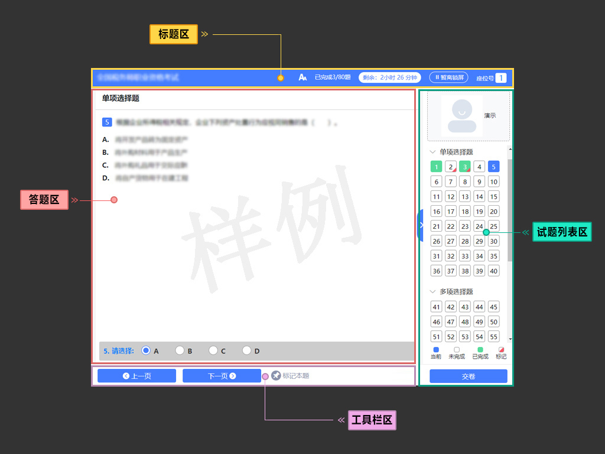
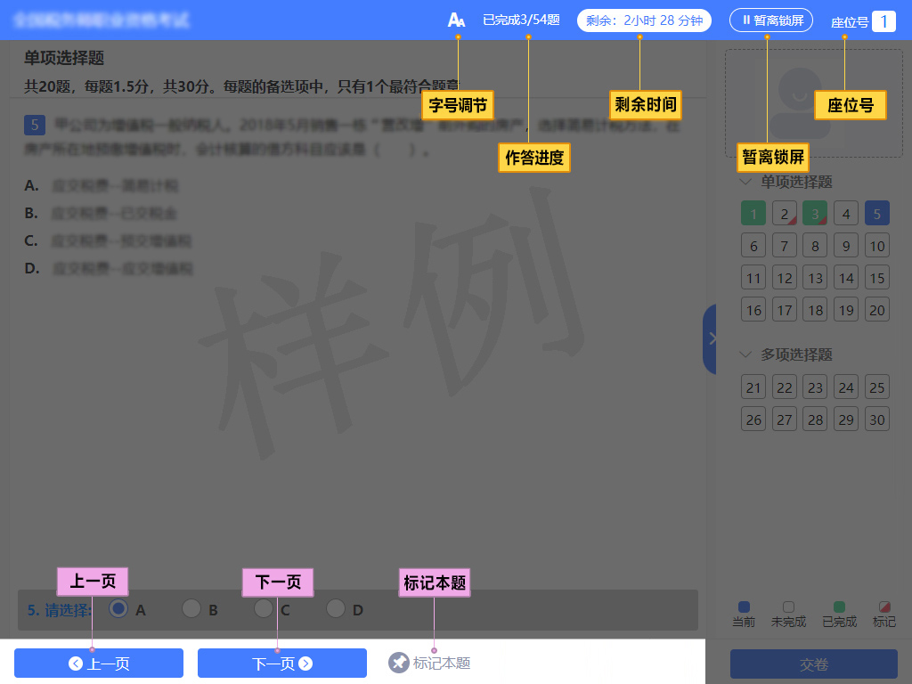
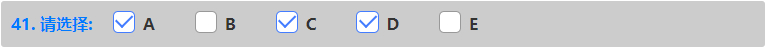

考生须知
机考操作说明
本说明详细介绍了机考系统的使用方法、答题方式，以及考生需要了解的重要事项。
在开始考试之前，请仔细阅读。
•
所有考生在草稿纸上书写的所有答题结果一律无效；草稿纸在考试结束后一律不得带出考场。
•
在考试资料、试题内容较多的情况下，请务必用鼠标拖动屏幕的滚动条，以避免遗漏重要信息。
•
在考试过程中，如果遇到任何您认为与机考系统软件、设备硬件故障相关的问题，请立即举手向监考人员示意，并在等待解决的过程中保持安静以免影响其他考生。
机考系统布局如下图所示。

标题区

工具栏区
标记本题：如果需要提醒自己稍后返回检查当前试题，则可以点击标记本题按钮，再次点击取消标记按钮则取消标记。被标记的试题会在右侧的试题列表中突出显示。对试题所作的标记，不会被作为答题结果，也不会影响考生得分情况。合理使用试题标记功能，可以帮助考生在大量的试题中快速查找到需要重点检查的试题。
上一页：可以通过点击上一页按钮，按顺序进入上一个答题页面。
下一页：可以通过点击下一页按钮，按顺序进入下一个答题页面。
客观题的试题作答区都在答题界面的最下方，如下图所示。
单项选择题

多项选择题、不定项选择题
单项选择题答题时，考生直接用鼠标点击备选项中认为正确的一个选项。如果需要撤销已经选中的选项，再次点击该选项、或者用鼠标点击其他备选项即可；机考系统只允许考生在所有备选项中选择一个备选项作为答案。
多项选择题、不定项选择题答题时，考生直接用鼠标点击备选项中认为正确的所有选项。如果需要撤销已经选中的选项，再次点击该选项即可；机考系统允许考生在所有备选项中选择任意多个备选项作为答案。